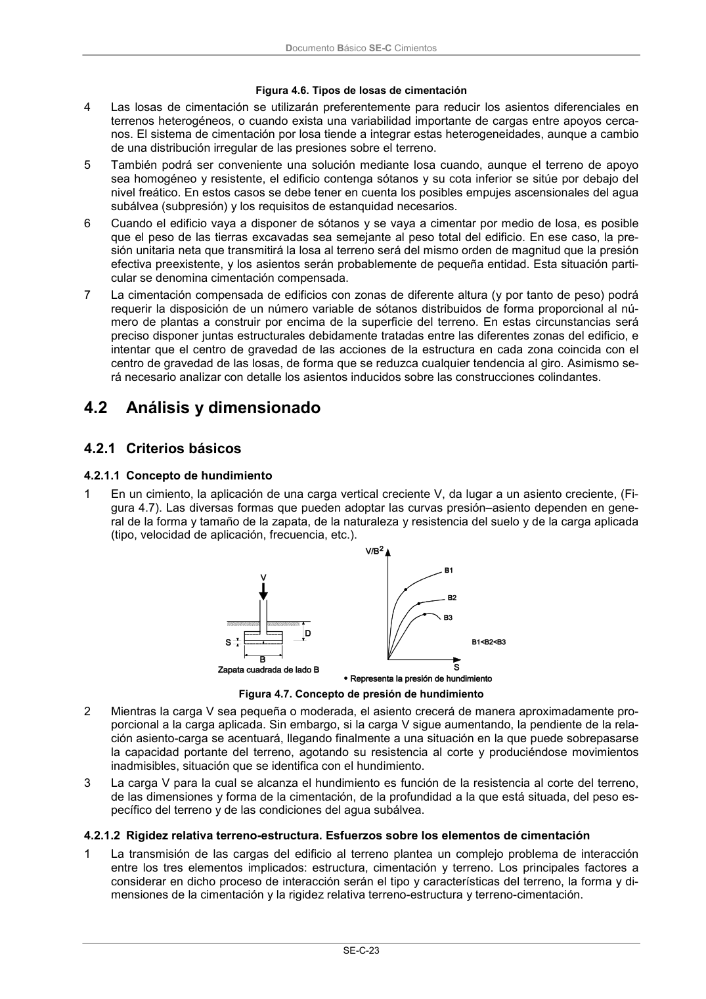

DB-SE-C · 4.2.1.2 Rigidez relativa terreno-estructura. Esfuerzos sobre los elementos de cimentación · versión 2019-12-20 · capa oficial
Formatos: JSON compacto · Markdown · PDF fuente
Ámbito del documento · texto del ámbito · documento y tablas
ID técnico a0056 · PDF pág. 28-29 · jerarquía no validada por persona · contrastado con el literal de la página 28 (candidato tipográfico); no validado por persona · padre: raíz
4.2.1.2 Rigidez relativa terreno-estructura. Esfuerzos sobre los elementos de cimentación 1 La transmisión de las cargas del edificio al terreno plantea un complejo problema de interacción entre los tres elementos implicados: estructura, cimentación y terreno. Los principales factores a considerar en dicho proceso de interacción serán el tipo y características del terreno, la forma y di- mensiones de la cimentación y la rigidez relativa terreno-estructura y terreno-cimentación. Documento Básico SE-C Cimientos SE-C-24 2 Aparte de la rigidez de la cimentación, la propia rigidez de la estructura a cimentar inducirá también restricciones al movimiento y a la respuesta asociada del terreno. En el caso más general, cuando el terreno tienda a asentar por efecto de la presión aplicada, la estructura, en función de su rigidez, redistribuirá sus esfuerzos, modificando a su vez las solicitaciones sobre los cimientos y el terreno. La situación de equilibrio final dependerá por tanto de la rigidez relativa del conjunto terreno- cimiento-estructura. 3 En la actualidad no se dispone de métodos analíticos que permitan determinar con exactitud las cargas de estructura y su redistribución en función de la respuesta del terreno y los esfuerzos sobre los cimientos correspondientes al equilibrio final. 4 Salvo en los casos en que tanto la estructura como la cimentación se consideren rígidas, los es- fuerzos en zapatas corridas, emparrillados y losas de cimentación se evaluarán teniendo en cuenta los fenómenos de interacción terreno-estructura. A los efectos de este DB se podrán emplear los conceptos y métodos simplificados que figuran en el anejo E.

PDF fuente redistribuible: copia fiel enlazada en esta página (SHA256 verificado).